Interfața pentru Pacienți
La momentul actual, versiunea noastră a platformei HealthHero conține următoarele funcționalități în cadrul interfeței destinate pacienților:
- Posibilitatea de a își crea un cont.
- Login și logout.
- Posibilitatea de a vizualiza o listă cu clinicile, cabinetele medicale și stomatologice din toată țara
- Posibilitatea de a face o programare online la doctrul dorit.
- Posibilitatea de a vizualiza o listă cu doctorii după specializare.
- Posibilitatea de a vizualiza o listă cu clinicile.
- Posibilitatea de a vizualiza istoricul medical.
- Posibilitatea de a adresa întrebări legate de platformă.
Când un pacient va încerca să acceseze platforma HealthHero va fi direcționat către pagina noastră de landing:
- Posibilitatea de a își crea un cont.
- Login și logout.
- Posibilitatea de a vizualiza o listă cu clinicile, cabinetele medicale și stomatologice din toată țara
- Posibilitatea de a face o programare online la doctrul dorit.
- Posibilitatea de a vizualiza o listă cu doctorii după specializare.
- Posibilitatea de a vizualiza o listă cu clinicile.
- Posibilitatea de a vizualiza istoricul medical.
- Posibilitatea de a adresa întrebări legate de platformă.

De asemenea, bara de navigație conține următoarele funcționalități:
- Autentificare
- Secțiune de FAQ
- Acasă
În plus, pagina principală mai conține:
- Butonul de „Află mai multe”
- Câmp pentru abonarea la newsletter
Prin apăsarea butonului de "Programează-te", utilizatorul este redirecționat către următoarea pagină:
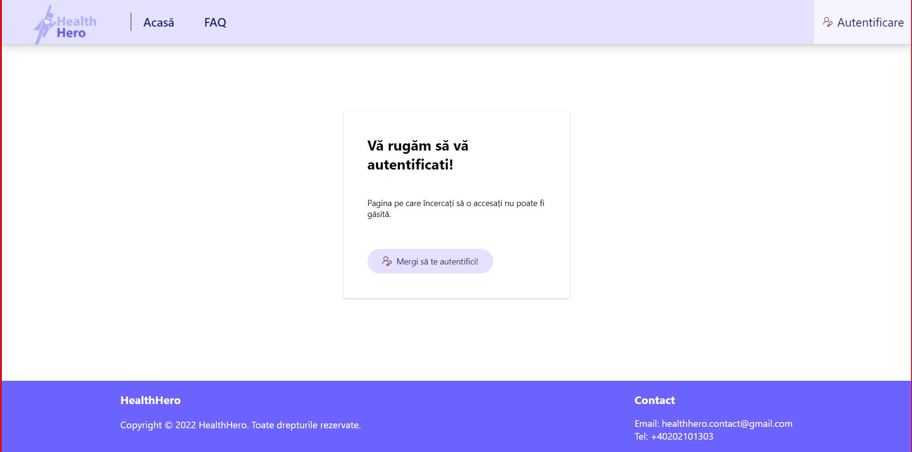
Prin apăsarea butonului de află mai multe, utilizatorul este redirecționat către următoarea pagină: 

- Programări
- Doctori
- Clinici
- Istoric Medical

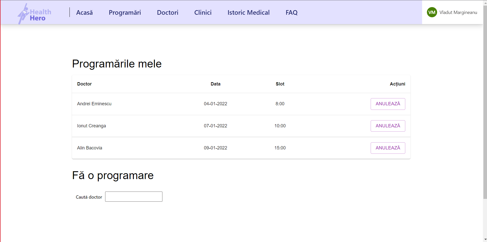
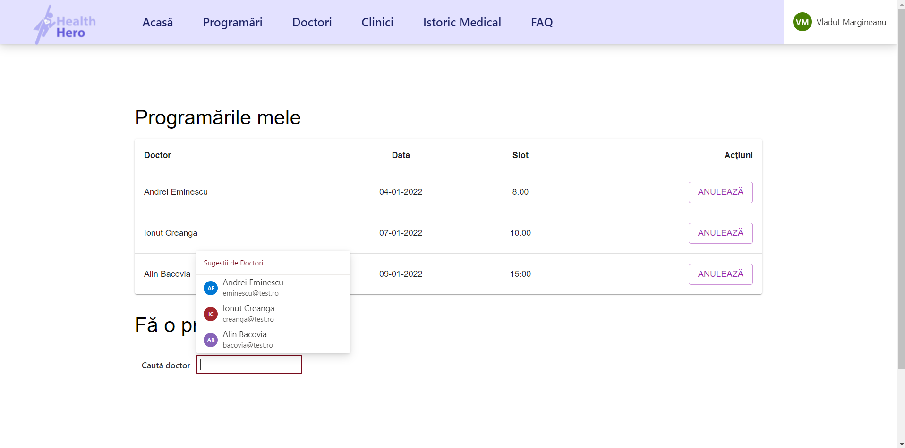
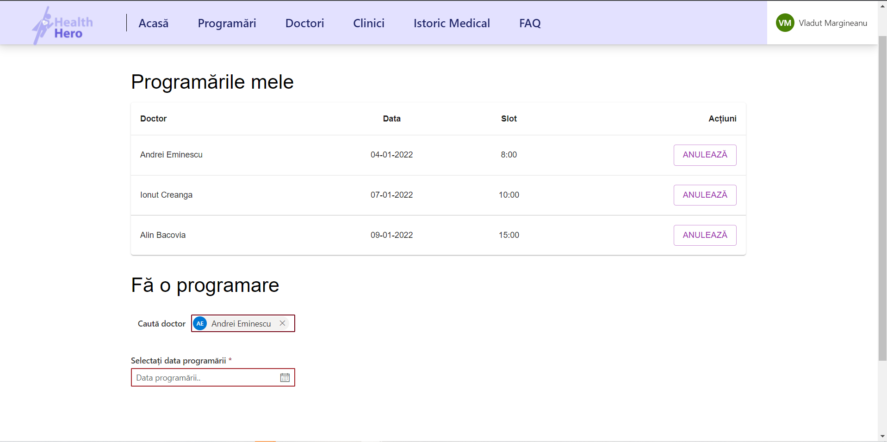
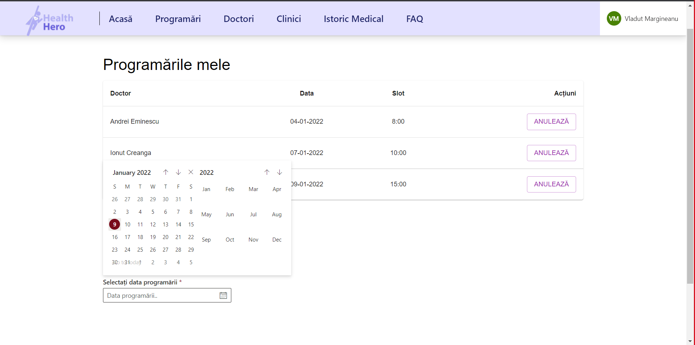
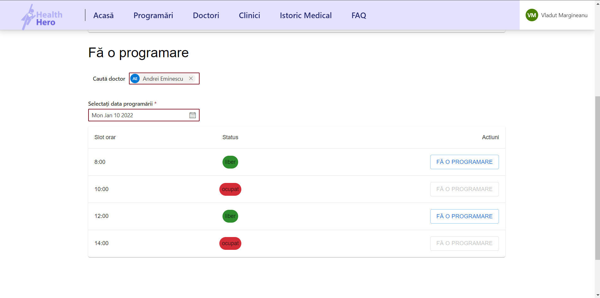
Prin apăsarea butonului "Doctori" din bara de navigație, utilizatorul va fi redirecționat către o pagina care contine o lista cu doctori
- acestia pot fi filtrati dupa specialitate. De asemenea se pot vizualiza detalii despre doctori:
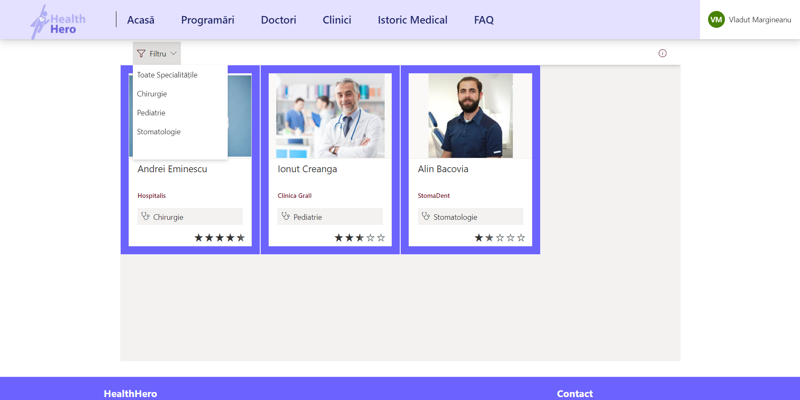
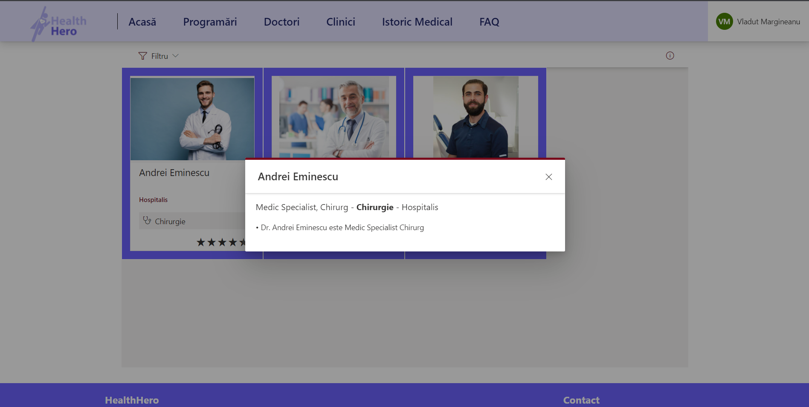
Prin apăsarea butonului "Clinici" din bara de navigație, utilizatorul va fi redirecționat către o pagina care contine o
lista cu clinici. De asemenea se pot vizualiza detalii despre clinici:
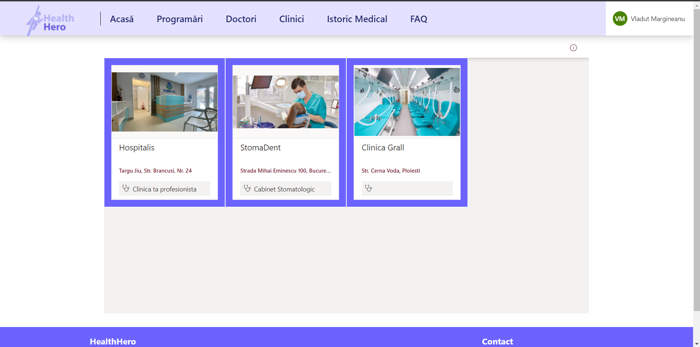

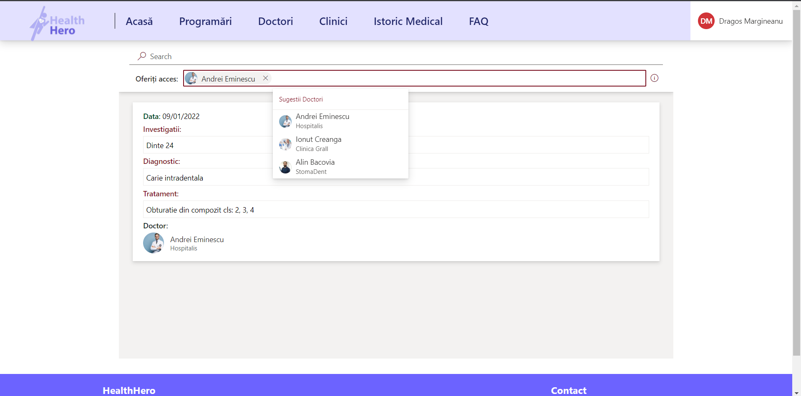
Prin apăsarea link-ului de FAQ din bara de navigație, utilizatorul va fi redirecționat către o pagină de suport tehnic:
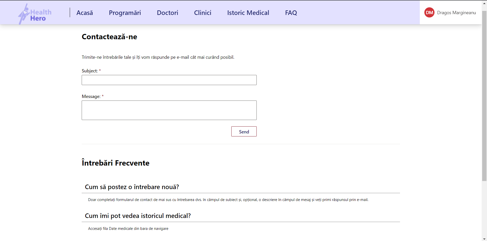